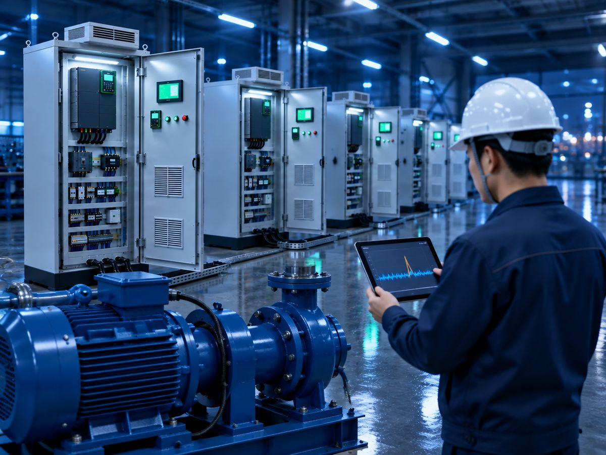

DONG-IN ENSIS, a smart manufacturing solution company, is expanding collaboration with IT companies such as MES and AI solution providers, led by its Intelligent Control Panel. Under this strategy, DONG-IN ENSIS takes full responsibility for field equipment integration (OT) — often the most difficult part of a smart factory project — so that IT companies can focus on developing their platforms and services.

Highlights
- Solving the OT bottleneck — Many smart factory projects run by IT companies have stalled because PLC models and communication methods differ from site to site, and data-collection gateways are a maintenance burden. The Intelligent Control Panel controls equipment through the PLC while collecting operating data, and connects directly to the cloud without additional hardware.
- Standard data structure — Motor winding and bearing temperatures, rotational speed, voltage, current and vibration are sent over MQTT and organized in the cloud DataHub into a common "equipment–sensor–real-time value–status" structure stored as time series. Partners integrate through REST API and WebSocket, so no new integration code is needed as equipment is added.
- Security and field safety — Communication is encrypted with TLS, and safety interlocks and final control authority remain with the field PLC. Because the server never controls equipment directly, concerns about electrical safety responsibility on site are reduced.
- Three ways to collaborate — ① Taking full charge of the OT layer (control panel design, installation and commissioning) in IT companies' projects ② Data integration through standard APIs ③ Jointly developing manufacturing customers and government support programs. Solutions are applied on site after technical meetings and demo-unit validation, and as a registered smart factory supplier the company can respond to support programs together with partners.
DONG-IN ENSIS has carried out more than 750 industrial and marine projects and has delivered results in fields with demanding safety standards, such as liquid hydrogen station control systems and test facilities for major shipyards. It is an official Schneider Electric SI partner and a supply partner for ABB, Fuji Electric and others.
"For AI and smart factories to work, field equipment data must come first," said CEO Baek Min-ki. "DONG-IN ENSIS focuses on connecting PLCs to the cloud easily and safely, and will change manufacturing sites together with our partners' solutions."
Original article (Korean): BusinessKorea (2026.10.02) →